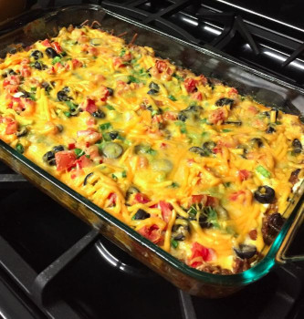
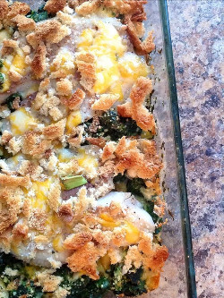
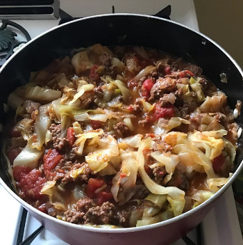

This is an easy and very tasty dish. I often substitute ground turkey and low fat dairy products and it is still delicious! Serve with chips, salsa and green salad.
Simple, easy fish recipe. Any white fish will do! And even the kids will eat up the spinach! (My four year old loves this dish!) This recipe was passed on by my Aunt and was a little bit of this, a little bit of that - so tweak the ingredients to your liking!
This is a quick and easy main dish. My kids don't even like cabbage, but they love this. I usually try to serve it with green beans, new potatoes, corn, and a pan of corn bread. They eat over half the pan every time. Also, the longer it stands the better it tastes.
